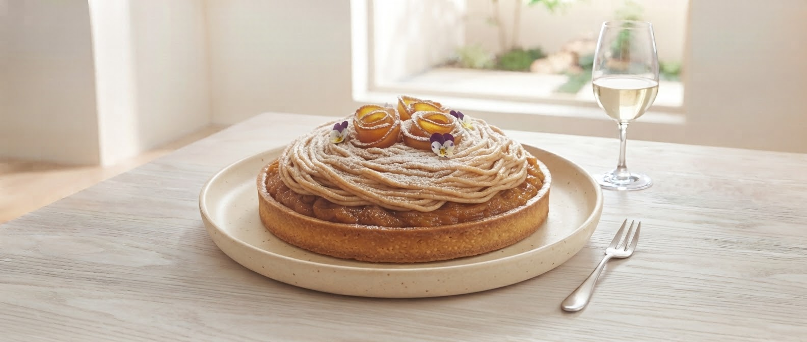
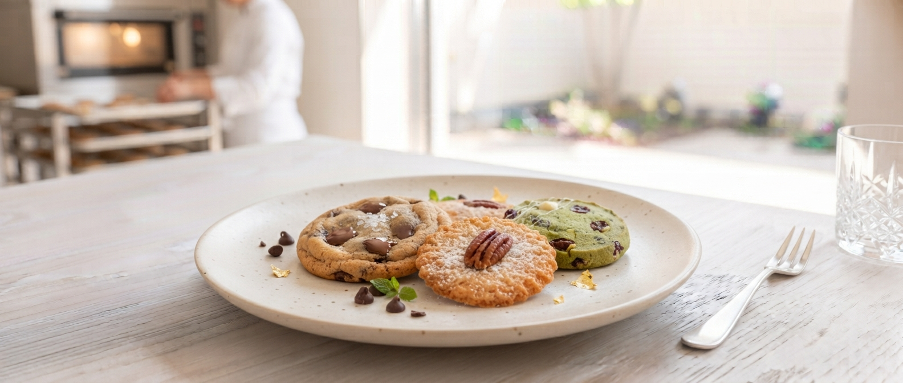
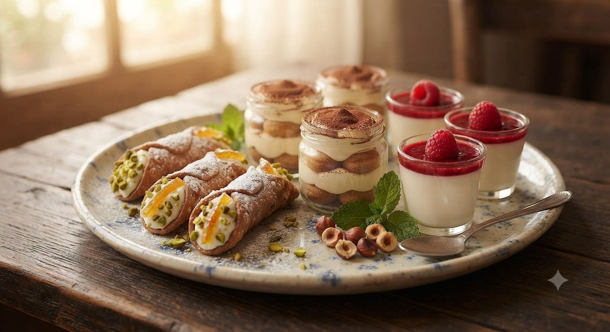
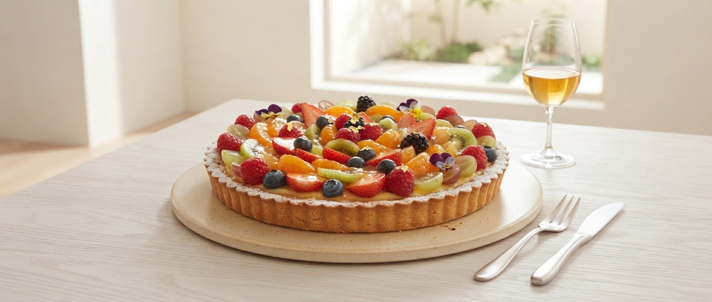

自家菜園で育てた新鮮な野菜と、
元パティシエのシェフが綴りなす繊細な味。
古民家の穏やかな空気の中で。

自家栽培野菜を惜しむ
大人の隠れ家
山形弁で「おいしい」を意味する「カシェル」。
家族経営ならではの温かいおもてなしと、
パティシエとしてのこだわりが詰まったスイーツ。
ここ五十鈴の地で、皆様の心に「カシェル」な瞬間を届けます。
土から、一皿の幸せへ

Our Story
元パティシエのシェフ・猪倉崇由が創り出す料理は、スイーツのような繊細さと、自家菜園の力強さを併せ持っています。姉の田畑千佳と共に、2015年、この古民家を改装してカシェルポポをオープンしました。
店舗の奥には「お菓子のアトリエ」を併設。お食事だけでなく、テイクアウトのスイーツも地域の皆様に愛されています。
「ランチで伺いました。はじめに出てきた冷製のポタージュが絶品で、素材の香りが一つ一つはっきりしていて、久しぶりに本当に美味しいパスタを頂きました。」
A様（山形市在住）「ピザ！すごくおいしいです！他とは全然違うチーズに野菜の甘さが乗っかって何とも言えない絶妙な味。今日も珍しくこれは美味しいと大絶賛でした。」
K様（ご夫婦で来店）
「小さなお子様と一緒に、もっと安心してゆっくり美味しいランチを過ごしてほしい」
そんなお客様の声に応えて、カシェルポポではご家族に優しい新サービスを準備中です。
元パティシエシェフが手がける、見た目も可愛く栄養満点のお子様ランチ。自家菜園のやさしい野菜スープや無添加ハンバーグなど、お子様の体に嬉しい仕上がりです。
評判の自家製焼き菓子（フィナンシェやクッキー等）とお好きなドリンク、お子様メニューがひとつに！ご家族みんなで笑顔になれるお得な贅沢セット。
ベビーカーのまま入店可能な広々スペースを確保。キッズチェア完備や、離乳食の温めサービスなど、周りを気にせずゆったりお食事いただけるようサポートします。
🌟 提供開始予定：近日公式Instagram及びお電話にて告知開始いたします。
ご家族のお食事やママ友会にもぜひご利用ください。
公式Instagramでは、今日のおすすめメニューや新作スイーツを発信中。


フォロー画面提示で「ミニ焼き菓子」プレゼント
※山形駅より車で約10分。駐車場完備。